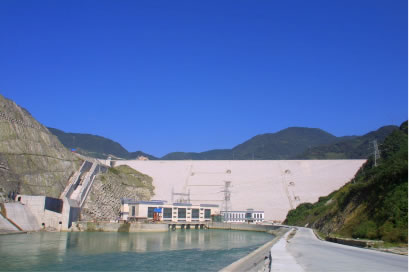

Of Lakes and Quakes
The story of the Great Sichuan Earthquake of 2008
Humans have reached a level of engineering wizardry that is now allowing for the change of natural landscapes. We can create lakes when and where we want, or make them disappear at our will. But this can, at times, lead to perils that are more often than not, unforeseen. This is a cautionary tale, a tale to be told when Icarus gets too close to the Sun, a tale we will hopefully learn from, sooner rather than later.
The Beginning
Our story has its roots in Chengdu, a city located in the Sichuan region of China. Chengdu is the capital of the Sichuan province, with a long and storied history. On one fateful day in 2008, the twelfth of May, this city bore witness to a massive earthquake that killed tens of thousands of people and injured many more.
M=7.9
At twenty eight minutes past six, on the twelfth of May, 2008, an earthquake of magnitude 7.9 was recorded. This quake was just beginning of a series of 125 quakes above 4.5 magnitude recorded that day.
The Fallout
Shown in yellow, are the aftershocks that followed on the 12th of May. The aftershocks of the earthquake continued till the 28th of May (shown in grey), resulting in more than 220 measurements over magnitude 4.5 being recorded. This also had an effect on the Longmen Shan fault located north-east of the epicentre of the quake.
Aftermath
Earthquakes became a regular event in this area post 2008. 254 earthquakes have been recorded in the 11 years that have followed. These have been visualised in red.
Before 2008
What was the situation like before this earthquake? Quite peaceful really. There were only 60 earthquakes since 1991 before 2008.
The blue dots represent the earthquakes that happened before 2008.
A graph to help you understand

This graph demonstrates the dramatic increase in seismic activities right after 2008. The slope of the graph shows that the number of earthquake occurances. The slope is much greater post 2008. The frequency of earthquakes since 2008 has increased ten fold as compared to the decade and a half preceding this.
Scientists attribute this to the construction of the Zipingpu Dam over the Puyang river, in the town of Dujiangyan located near the city of Chengdu.
Zipingpu Dam
The construction of the dam began in the March of 2001. Post its completion in 2003, the dam has held close to 1,120,000,000,000 litres of water. This added stress to the Longmen Shan Fault and increased the seismic activity in the region.
And thus...
The stress built up till 2008, and was released in the form of a devastating earthquake that claimed the lives of over 68,000 and injured hundreds of thousands of others. The earthquakes are moving towards to the Longmen Shan fault, so we definitely have more to come from this dam.
Conclusion
History has shown us, on, multiple occassions, the dangers we put ourselves under by building monuments of this scale.
This was just an attempt to understand what was clearly a preventable catastrophe, and examining what the aftermath of constructing a behemoth of the likes of the Zipingpu dam would be.
Made by Avyay
Adapted from Project Gutenberg